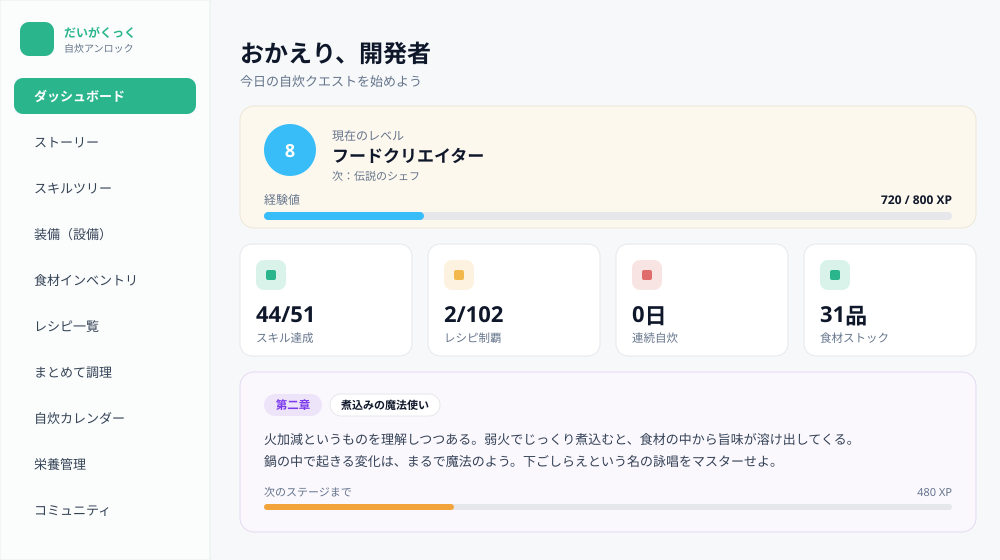
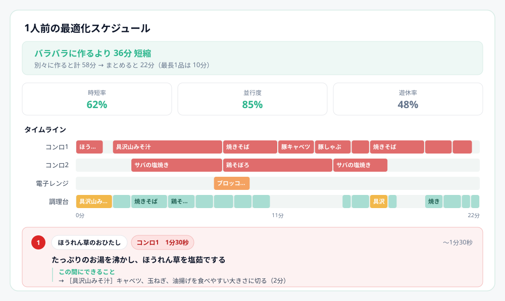

Personal Project
だいがくっく
自炊を始めても続かない大学生のための、ゲーム感覚で自炊を続けられる Web アプリです。料理をするほど経験値がたまり、スキルやストーリーが進みます。複数の料理を同時に作るときの手順を自動で組み立てる機能も作りました。
作ったきっかけ
競技プログラミングでアルゴリズムを学ぶうちに、グラフやスケジューリングの考え方は、身近な料理の段取りにも応用できるのではないかと考えるようになりました。「2 品を同時に作ると、どこかで手が止まったり、片方が冷めたりする」という自炊の悩みを題材に、学んだことを実際に動くアプリにしたのがこのプロジェクトです。
続けられる仕組み

- 経験値とレベル：料理を記録すると経験値がたまり、レベルが上がります。
- スキルツリー：「切る」「加熱・焼く」「味付け」「下ごしらえ」などの分野ごとに、技術を少しずつ身につけていきます。
- ストーリー：レベルに応じて章が進み、「最初の失敗」「初めての成功」のような自炊の成長物語を読めます。
- 記録と振り返り：調理カレンダー、作った料理の履歴、1日の目標に対する栄養の達成率を表示します。
- 家にあるもので作る：持っている調理器具と食材の在庫を登録し、レシピと結びつけて管理できます。
複数レシピの並行調理プランナー
炒飯と味噌汁のように 2 品以上を作るとき、どの順番で何をすれば早く、しかも同時に完成するかを自動で計算します。

- 各レシピの工程を「この工程が終わらないと次に進めない」という依存関係のグラフ（DAG）にします。
- クリティカルパス法（CPM）で各工程の余裕時間を計算し、これを優先度にします。余裕がない（遅らせると全体が遅れる）工程ほど優先します。
- 貪欲法（リストスケジューリング）で割り当てます。着手できる工程を優先度の順に並べ、空いている資源の一番早い時刻へ 1 つずつ入れていきます。コンロの口数、電子レンジ、調理台、シンクを資源の制約として扱い、同時に使えない工程が重ならないようにします。
- 使い終わった器具の皿洗いを自動で工程に加え、煮込みなどの待ち時間に入れます。
- 1 品ずつ作った場合と比べた短縮率、待ち時間の割合、同時に進めた工程の数を表示します。
- 貪欲法なので最適解の保証はありませんが、一瞬で計算でき、実用上十分な手順が得られます。焼きなまし法や整数計画法による改善は今後の課題です。
各工程には「この間にできること」として、加熱の待ち時間に進められる別の料理の作業を表示します。並行調理の手順作成に関する研究論文（中部ほか, Algorithms, 2021）を参考に実装しました。